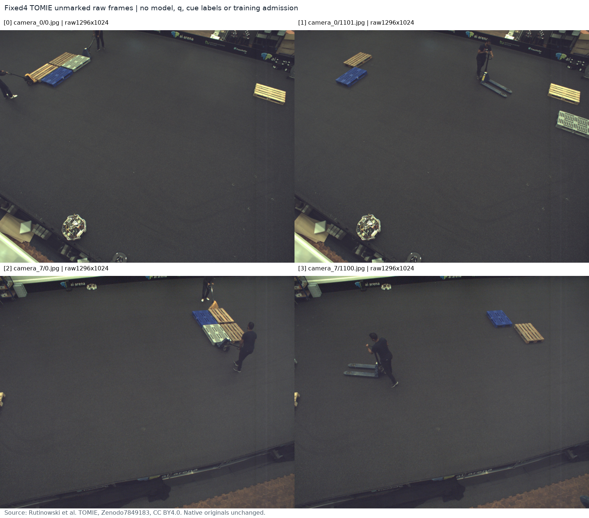
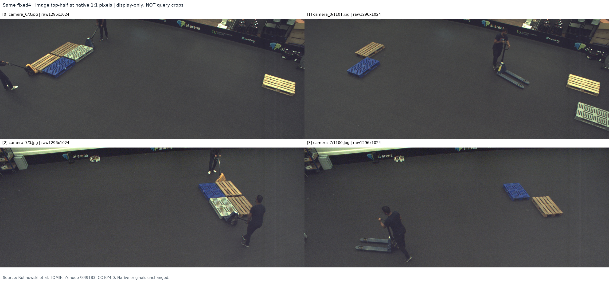

얇은 실제 팔레트 RGB는 확보했습니다. 특정 q에서 기대 cue가 맞는지, 외부 물체가 그 cue 전체를 가렸는지는 아직 학습 정답으로 확정하지 않았습니다.
고정한 두 카메라의 첫/중앙 프레임 4장과 일치 CSV 4개만 읽었습니다. 전체 4.992 GB ZIP을 받지 않고 HTTP Range로 7,207,556 bytes를 전송했으며, 선택 member 총13,386,425 bytes의 CRC·SHA를 검증했습니다. 전체 archive MD5 검증 주장은 하지 않습니다. 모델·특징·initializer·학습·current223·PnP는0입니다.
정량·provenance JSON · 독립 실제 CSV 감사 · root 실제 관찰 · 공식 CC BY4.0 원본
원본은 1296×1024 RGB입니다. 목재/천공형 팔레트와 사람·팔레트 트럭이 보이지만 높은 시점에서 구조 접합부는 작습니다. 이 고정 표본에서 특정 cue의 완전 외부 가림을 증명하지 않았고 유리한 이미지로 바꾸지 않았습니다. 동일 recording의 두 카메라이므로4개 독립 환경으로 세지 않습니다.

아래는 모든 이미지에 같은 상단 절반을 적용한 native1:1 상세 보기입니다. 모델 query crop이나 새 cue 좌표가 아닙니다.

| 파일 | entity 행 | 이미지 수 | 열 수 | 프레임 번호 |
|---|---|---|---|---|
| camera_0 data | 11,912 | 1,489 | 9 | 450–1938 |
| camera_0 raw_data | 15,512 | 1,939 | 6 | 0–1938 |
| camera_7 data | 15,512 | 1,939 | 8 | 0–1938 |
| camera_7 raw_data | 15,512 | 1,939 | 6 | 0–1938 |
camera_0의0.jpg는 data.csv에 없고 raw_data에는8개 entity 행이 있습니다. data/raw가 겹치는 행은 첫6필드가 정확히 일치하지만, camera별 출력 열이 다릅니다. raw_data에는 bbox·Visible이 없습니다.
Visible은 물리 cue D가 아니며, Occlusion을 E로 읽을 수 없습니다. 저자 코드상 Visible은 entity render/FOV 조건과 raw flag를 조합합니다. raw Occlusion의 물리 의미, Position 단위 및 exporter 버전은 미확인입니다. 이름6PALLET+2FORKLIFT는 객체 연결에 도움이 될 수 있지만 native8/물리 cue 대응을 주지 않습니다.
추가 실제 flat-pallet 소스의 접근·외관 가능성을 확인했습니다. 훈련 admission과 새 D/E/S 라벨은0이며 native8·위치 정확성은UNKNOWN입니다. 후속 단계에서는 실제 초기 q/L을 고정한 다음 target↔물리 cue 및 불확실성/가림 근거를 별도로 검토해야 합니다. AABB corner를 자동 정답으로 만들지 않습니다.
첫 시도에서 세 번째 RGB 전송이 중단됐습니다. 원 실패 기록을 보존한 뒤 root가 승인한 정확히 같은 range1회 재시도로 완료했으며, 성공한 RGB/목록을 다시 받지 않았습니다. V1의 미완료 body는 디스크에 남기지 못했으므로 해당 bytes의 SHA는 주장하지 않습니다. V2는 모든 실제 payload를 보존했습니다.
이미지 출처: Rutinowski et al., TOMIE, Zenodo7849183, CC BY4.0. 원 JPEG bytes는 변경하지 않았습니다. Contact는 표시 resize/고정 상단절반과 외부 caption만 사용하며 학습 입력이 아닙니다. A는 원본4장과 contact2장을 실제 확인했고 root는 원본00/03 및 모든4장의 상단 contact를 확인했습니다. 저자 코드는 텍스트만 읽었고 실행·복사 재사용하지 않았습니다.